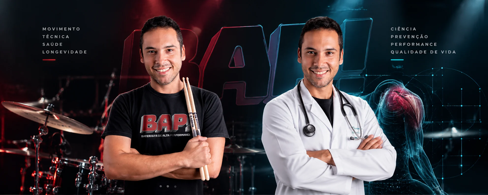

MOVIMENTO.
Aprenda bateria com mais consciência, técnica e saúde em todas as fases da sua jornada.
▶ ASSISTA AO VÍDEOPARA QUEM É O MÉTODO BAP
ESCOLHA O SEU
CAMINHO.
Um método para bateristas, famílias,
professores e instituições.
uma orientação personalizada com base nos
seus objetivos e na sua realidade.
PARA QUEM VOCÊ PROCURA O MÉTODO BAP?
Escolha a opção que melhor representa sua necessidade.

BAP PRIMEIROS RITMOS
E SE SEU FILHO APRENDESSE MÚSICA COM SAÚDE DESDE A PRIMEIRA AULA?
Aprender ritmo e coordenação é fundamental. E conhecer o próprio corpo, perceber o conforto ao tocar e desenvolver bons hábitos também pode fazer parte dessa descoberta.
Propomos uma abordagem lúdica, apropriada à idade e acompanhada por responsáveis e educadores. Não se trata de impor uma postura única ou de substituir cuidados profissionais.
CONHEÇA O BAP PARA CRIANÇAS ↗BAP EDUCAÇÃO
PARA ESCOLAS, CONSERVATÓRIOS E PROJETOS SOCIAIS.
Imagine integrar consciência corporal à formação de estudantes de bateria e percussão, com atividades adequadas a cada fase, orientação aos professores e práticas educativas que acompanhem a aprendizagem.
OS PILARES DO MÉTODO BAP
MOVIMENTO
Técnica eficiente e consciência corporal.
TÉCNICA
Mais controle e melhor desempenho.
SAÚDE
Hábitos de prática e atenção ao corpo.
LONGEVIDADE
Uma vida inteira de música.
CONHEÇA O MÉTODO BAP
VEJA O MÉTODO
EM AÇÃO.
Vídeos com explicações, exemplos práticos e depoimentos de bateristas que já aplicam o método.
ASSISTA AOS VÍDEOS
TIAGO GUIMARÃES CONHEÇA O MÉTODO BAPO QUE OS BATERISTAS FALAM
EXPERIÊNCIAS COM O MÉTODO BAP.
Conheça experiências de alunos e profissionais. Depoimentos reais serão publicados aqui após autorização dos participantes.
COMPARTILHE SUA EXPERIÊNCIA04 / CONTINUE EXPLORANDO